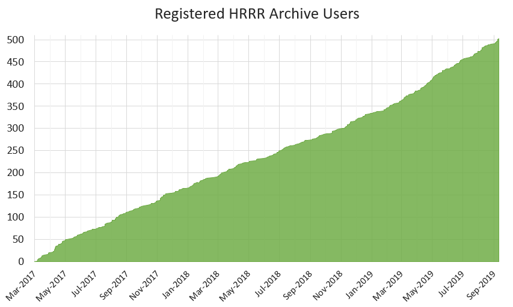

HRRR Archive at the University of Utah
Frequently Asked Questions
About the HRRR archive
What is this HRRR archive?
This HRRR archive is a collection of output from NCEP's High Resolution Rapid Refresh model. This is a model developed by NOAA ESRL and is run operationally every hour at NCEP's Environmental Modeling Center. It continues to be developed by ESRL.
The operational HRRR generates hourly forecasts gridded at 3 km for 18 hours over the contiguous United States making it the highest spatial and temporal resolution forecast system run by NCEP.
HRRR analyses and forecasts are exceptionally valuable to the research community. However, an official HRRR archive does not exist. We began archiving HRRR data in April 2015 to support research efforts at the University of Utah. The archive system failed and we lost all the data. We rebuilt the archive and began storing data starting with 28 December 2017.
Instead of storing all available HRRR files, we only download the files most useful to accomplish our research efforts. We realize this data is valuable to many others and have made the archive publicly accessible for research purposes. We currently have 60 terabytes at our disposal.
Additional details about the archive have been published in Computers and Geosciences
The HRRR archive has an official doi: 10.7278/S5JQ0Z5B
What files are contained in the HRRR archive?
Output files, in GRIB2 format, contained in the archive include:
- sfc: Surface fields for analyses and forecasts
- File format: hrrr.t[00-23]z.wrfsfcf[00-18].grib2
- File size: ~120 MB
- prs: Pressure fields for analyses
- File format: hrrr.t[00-23]z.wrfprsf00.grib2
- File size: ~380 MB
bufr: Vertical profiles available for KSLC, KODG, and KPVU- File format: [KSLC,KODG,KPVU]_[YYYYMMDDHH].buf
- File size: ~75 KB
- sfc: Surface fields for analyses
- File format: hrrr.t[00-23]z.wrfsfcf00.grib2
- File size: ~120 MB
Note: Not all hours are available for the experimental runs.
- sfc: Surface fields for analyses
and forecast hours- File format: hrrr.t[00,03,06,09,12,15,18,21]z.wrfsfcf[00-36].grib2
- File size: ~100 MB
- prs: Pressure fields for analyses
- File format: hrrr.t[00,03,06,09,12,15,18,21]z.wrfprsf00.grib2
- File size: ~205 MB
Note: Not all hours are available for the experimental runs.
Note: Some days and hours in our archive may not be available. Either the forecast wasn't run that hour (typical for the experimental models), or our download scripts failed to download everything.
What are GRIB2 files?
GRIB2, or Gridded Binary Version 2, is a standard file format used by meteorologists for model data sets. There are several useful tools for working with the data.
- wgrib2: a command line utility used to read GRIB2 files.
- pygrib: a Python module used to read GRIB2 files.
- IDV: a desktop application that can view many types of weather data.
- NOAA Toolkit: graphical software that can read and visualize GRIB2 files. I highly recommend this tool if you haven't used GRIB2 files before.
Where do the HRRR output files come from?
The operational HRRR (hrrr) is downloaded via HTTP from the NOMADS server.
Experimental HRRR (hrrrX) and HRRR Alaska (hrrrak) are downloaded via FTP from NOAA ESRL (credentials required).
What version of HRRR is in this archive?
HRRRv1 was the operational model prior to August 23, 2016.
HRRRv2 was implemented at NCEP on August 23, 2016 beginning with the 12z run. We download the operational version from NOMADS. For more details on the HRRRv2 implementation, read the announcement
HRRRv3 is the current experimental version under development and testing at ESRL. It is expected to become the operational model in May 2018 (source). Version 3 will extend the forecast period for the 00, 06, 12, and 18 run out to 36 hours. Improvements in version 3 include updated Thompson microphysics, improved MYNN PBL scheme, updated land surface model with 15 second MODIS data, refined roughness lengths for certain land use types, and additional improvements in assimilation methods including new dataset like lightning and radar radial velocity.
HRRRv4 will be the next developmental version at ESRL and with expected implementation in 2020. This version will make more use of ensemble modeling methods.
When do we download the HRRR data?
HRRR, HRRR-X, and HRRR-Alaska is downloaded from NOMADS and ESRL four times a day at 00:20, 06:20, 12:20, and 18:20 UTC.
We only download HRRR data four times a day to prevent anyone from grabbing real-time forecasts from us because this HRRR archive is not meant to be used for real-time or operational products. Again, if you are looking for HRRR data from the last two days, download the files directly from NOMADS.

Vision for the Future
This project is turning into a classic case of one of my favorite children's books If You Give A Mouse A Cookie where starting one thing has grown and continues to grow into something bigger.
At the 2017 Annual AMS meeting I talked with a guy on the the AMS Board on Data Stewardship. He said the lack of a HRRR archive was one concern brought up at their board meeting.
Archiving high resolution model data is an expensive task. This is a growing issue in the atmospheric science community as we move to higher resolution models that generate terabytes of data annually. At the 2018 Annual AMS meeting, it sounds like NOAA is interested in pushing the HRRR output to its Big Data partners.
There are many opportunities with cloud computing were we "bring the data to the computing." An archive on the cloud can be kept in one place and researchers can use cloud resources to process the data, perform analyses, and initialize WRF simulations without downloading the model output on their own computers. It would especially be beneficial if it were possible to efficiently mine the large dataset for a specific variable at a point or subgrid for a range of dates or times. Perhaps this model data needs to be stored in HDF5 format rather than grib2. It would be nice if there was fewer redundant data fields between the files. For instance, some fields are available in the prs and sfc and nat files. The benefits and complications of cloud computing were discussed at the 2017 Modeling Research in the Cloud Workshop.
Until those challenges are overcome, I would like to make this HRRR archive easily available to everyone to demonstrate the interest and need for having such an archive. This archive has already proven beneficial to many researchers and has served many applications.
In the future, it is possible to have server-side data processing that generate time series or wind roses for point locations in the HRRR model. My current methods for doing this are extremely inefficient because they still require downloading a temporary file for a single variable of the entire grid (which contains about 1.9 grid points over the contiguous United States).
If I were in charge of the HRRR, I would like to see a more rapid data assimilation cycle and run the model every 15 minutes out to a 48 hour forecast. This would ultimately create 7 times as much data while providing a 96 members for time-lagged ensembles. My dream for a future weather prediction system is a model that is continuously updating.
The main concept of this archive is to create a HRRR archive in one place so researchers don't have to redundantly store local archives, with the purpose to provide the data you need, when you need it.
Who archives the HRRR data?
The HRRR archive at the University of Utah is managed by Brian Blaylock and the MesoWest group on resources at Utah's Center for High Performance Computing. It can also be found in the University of Utah Hive. Please contact Brian with questions regarding the archive.


Why do we archive the HRRR?

While you can find current HRRR output at NOMADS, there is no official HRRR archive that is publicly and easily available, to our knowledge. This "gap" in the NOAA data archives will hopefully be filled in the future, seeing that their vision is that all NOAA environmental data shall be Discoverable, Accessible, Useable, and Preserved. We hope to be part of the solution to that goal.
This HRRR archive has been created to support various research endeavors in the Department of Atmospheric Sciences at the University of Utah. Things we do include:
- Initialize the Weather Research and Forecast (WRF) model with HRRR analyses as initial and boundary conditions. More info here.
- Model verification, where HRRR analyses and forecasts are compared to observed conditions.
- Retrospective analysis of high-impact weather events.
- Basic statistics of variables (max, min, mean, percentiles).
- Potential work with machine learning applications.
This archive allows us to perform analysis of the HRRR model
performance, independent of the ESRL folks, for our own research purposes and goals.
You are welcome to use the archive for your own research, but as a courtesy, please register and read the "Best Practices" document before downloading from the archive.
Where else can I find archived HRRR data?

Where is the HRRR archive?
The archive is physically located at the University of Utah Downtown Data Center in Salt Lake City, Utah. It is hosted on Utah's Center for High Performance Computing Pando archive storage system.
This object storage system is similar to Amazon's S3 storage, but this is less expensive. We are currently have a 60 TB allocation. with a storage rate of ~150 GB/day.
But you probably aren't interested in it's physical location. You want to know how to download from the archive. Lucky for you, the data is publicly available to those outside the University of Utah. We only ask that you fill out the registration form before downloading. The registration form helps us keep track of the number of people who find this data useful, which helps us justify making the archive available to you. Archive Registration
After registering, you will be redirected to the interactive download page. Click the "Scripting Tips" button for how-to instructions to download from Pando with wget or cURL. These tips also show how you can target specific variables you are interested without downloading the entire file. This will save you space an download time.
 What is the Pando archive?
What is the Pando archive?
Pando is a colony of quaking aspen trees in southern Utah, thought to be the oldest and largest living organism in the world, linked together by the same root system. According to Wikipedia, Pando is Latin for "I spread". The name is fitting for the CHPC object storage system because of its resilience and scalability, like the tree system.
The underlying software running Pando is Ceph, a project supported by RedHat. While Ceph can be configured in a few ways, in this archive Ceph manages the data objects with the Amazon S3 API. It is a separate "island" from the rest of CHPC file system so that output from other programs cannot write directly to it. Instead, files are copied to Pando through utilities like rclone or s3cmd.
Pando is built in three parts. All of these can be scaled to meet needs of the growing archive.
- 9 OSD Servers (16 8TB drives, each) - These contain the data objects.
- 3 Monitors - Monitors keep a map of the data objects. When a request for data is made, these monitors are contacted for the object map and return the object's ID.
- 1 RADOS Gateway node - You, as the client, make requests through this gateway for data downloads.
Adapted from Sam Liston
What days are available to download?
The HRRR archive begins on 28 December 2017. Browse the interactive web download page for a visual sense of what data files are available each day.
We store all the operational analyses and forecast for the surface fields. Unfortunately, we decided the pressure field files (~315 MB) are too large for us to save the forecast hours. We store analyses of the experimental HRRR model.
Timeline:
- 2015-04-18: The HRRR archive is born! Only HRRR analysis hours (f00) were stored for sfc and prs files.
- 2016-07-27: Began storing HRRR 15 hour sfc forecasts.
- 2016-08-24: Began storing HRRR 18 hour sfc forecasts (HRRRv2 became operational).
- 2016-12-01: Began storing experimental HRRR-Alaska. prs analyses and select sfc variables for analyses and forecasts.
- 2016-12-01: Began storing available experimental HRRR surface analyses.
- 2017-03-01: Moved HRRR archive from local file system to Pando storage.
- 2017-06-08: Began storing all available HRRR-Alaska sfc variables.
- 2017-12-27: Pando Failed: All prior data was lost.
- 2017-12-28: Pando Rebuilt
Who uses the HRRR archive?
Many people are interested in the HRRR archive, including yourself (obviously, or else you wouldn't have Googled HRRR archive).
The initial purpose of this HRRR archive was to serve atmospheric science research at the University of Utah, particularly my own research for my Master and PhD degrees. For example, I used HRRR analyses to initialize WRF simulations.
The archive is searched for quite often by people like you. Since this archive has been published online I have received inquiries and download requests from National Weather Service employees, NASA scientists, researchers at the National Institute of Standards and Technology, a United State Air Force Captain, employees at NVIDIA, Lockheed Martin, commercial wind power companies, university professors, graduate students, airline forecasters, post docs, a bunch of students working on a capstone project, and many others.
The HRRR archive allows researchers to use past weather data at high temporal and spatial resolution without the need to run their own WRF simulations. This is a huge time saver.
How is the HRRR archive useful to you? Send me an email and let me know.
Gallery
Online Tools
HRRR Statistics with Open Science Grid
I'm using the Open Science Grid to calculate long term statistics, calculated for +/- 15 days for every hour of the day for all the HRRR files in our archive. I calculate the following percentiles [0,1,2,3,4,5,10,25,33,50,66,75,90,95,96,97,98,99,100].
Plot HRRR Data with Python
A handy-dandy Jupyter Notebook for making various maps.
Also, a notebook on overlaying GOES-16 images with HRRR data.
Initialize WRF
I use the HRRR analyses to initialize WRF's boundary and initial conditions. Check out my instructions for initializing WRF with the HRRR here: http://home.chpc.utah.edu/~u0553130/Brian_Blaylock/hrrr.html
2017 Solar Eclipse
Solar radiation from @mesowestutah, operational HRRR, and experimental HRRR during #Eclipse2017 Thanks, @NOAA_ESRL pic.twitter.com/hHoBNWVW2m
— Brian Blaylock (@blaylockbk) August 22, 2017
Model Verification
2-day Time Series: Time series graphs of observed values for select MesoWest stations and HRRR values for f00, f06, f12, and f18 for the last two days. Check out the HRRR Point Forecasts page, and select the clock next to a station to view verification of the HRRR model for the last two days.

"Hovmoller" Diagram: Imagine a Hovmoller diagram with forecast hour on the y-axis and valid time on the x-axis. These are created for a variable over each HRRR forecast hour and compare with the observed value. On the HRRR Point Forecasts page, select the clock next to a station and click "Hovmoller". GitHub Code


Composite Percentiles
I created 2-year "climatologies" or composites of wind speed, temperature, and other variables for every hour of the day for an almost two year period. These may be used for MesoWest range checks to flag suspect or bad observations.
You can view all my climatological plots in the gallery here. I managed to get the computation time to find the max, min, and mean values for the ~2 years of data down to 20 minutes using 30 processors, (much better than 5 hours on a single processor). Brute-force calculations of percentiles takes quite a bit more time and memory. 1, 5, 10, 90, 95, and 99th percentiles where done for each hour of every day in the two years, and those took about one hour (download time from Pando and calculation) per variable.
The HRRR analyses mean winds are comparable with the results of James et al. 2017.


Case Studies
Investigated gravity wave in St. Louis and thunderstorms in Atlanta.


Quantify inversion strength during the Utah Fine Particulate Air Quality Study, January 2017.
New England Snow Storm, March 13-14 2017
Great Salt Lake surface temperature (before HRRR assimilation was fixed)
Other People
Matt Lammers from NASA combined HRRR 925 mb winds with GMI and IMERG precipitation data for visualization of Hurricanes.
Tips for CHPC Users
Do you work/study at the University of Utah, too? Cool! Go Utes!! Here are a few helpful tips that will make your life easier. That is, if your life involves using HRRR data from our handy archive. Please share with me cool stuff you learn!
I have stuff in my own Pando buckets. How can I view those files in a browser?
The HRRR download page is a custom-built interface for accessing files in the HRRR buckets, but what if you have your own buckets in Pando? You're in luck, because I created this more generic web interface for viewing and downloading file objects in your Pando buckets that look more like the Apache file explorer.
How full is our Pando allocation?
View the amount of space used on our Pando allocation here.
Is the archive on the local file system?
Yes, we keep a backup of the HRRR archive on horel-group7.
Then navigate to the HRRR directory you are interested:
- hrrr
- hrrrX
- hrrrak
- GOES16
Want a behind-the-scenes tour of the HRRR archive?
The process we use to downloading HRRR and move HRRR to the Pando archive system is documented on GitHub. Horel-S3
How do I get the HRRR data if what I'm looking for is compressed?
If you find that what you're looking for is compressed, the following instructions will help get what you need:
-
Copy the models.tar.gz file to your own space. Yes, this is large (~20 GB). It contains all the model data we archive (I warned you that this was inefficient).
-
Before untarring the entire directory, you can check if it contains the files you need with something like this:
less -p /hrrr/hrrr.t models.tar.gz -
You can untar the entire file, but that would take a looonng time, and you don't need everything in that file anyways.
You can extract just the HRRR data with this one-liner...(still takes a bit of time)
tar -xzvf models.tar.gz 20160101/models/hrrr/Or you can get more creative and use the following to get just the pressure fields. (In this case it helps to know the contents of the tarred file). Starting in the directory you wish to copy the files into, type...
tar -zxvf models.tar.gz --wildcards --no-anchored 'hrrr.t*z.wrfprsf00.grib2'